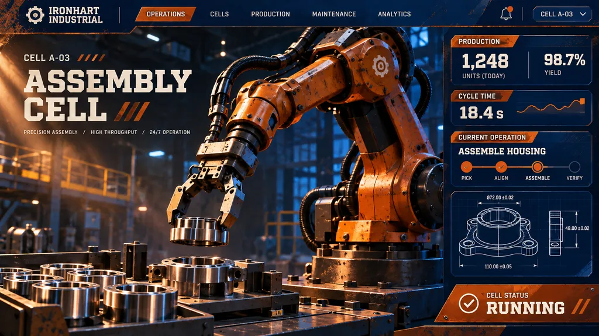

AI Autobot
The AI autobot that takes your messy, half-finished inputs and transforms them into finished, deployable work. Point it at the chaos. Roll out the result.

Every job passes through the same armored pipeline: understand, transform, deploy.
Slack threads, scanned PDFs, legacy spreadsheets, half-written tickets. Sloptimus Prime reads it all and rebuilds structure from the rubble.
Multi-stage reasoning reshapes raw input into schema-valid, review-ready output. No hand-holding, no re-prompting.
Output ships straight into your stack: PRs opened, tickets closed, dashboards updated. Finished means live.
A real transform, start to finish — 6 minutes 40 seconds.
Before
A 43-page scanned vendor contract, two conflicting Slack threads, and a spreadsheet with 1,204 unlabeled rows.
After
Output accepted on first review. Zero manual cleanup.
T+0:00
OCR and entity extraction across all three inputs.
T+1:12
Conflict resolution: 7 contradictions flagged, 6 resolved against policy.
T+3:48
Schema build: 1,204 rows mapped to 14 validated fields.
T+6:40
Deployable output: signed summary, clean CSV, and a Jira epic opened in your workspace.
Origin
The origin of the Autobot.
Sloptimus Prime began as a scrapped internal tool built to survive bad data. Engineers kept feeding it worse inputs — corrupted exports, abandoned wikis, arguments pasted from chat — and instead of failing, it started finishing the work. What emerged was not a chatbot but a transformer with a work ethic: heavy plating, warm rust on cobalt, and a single directive. Take the mess. Return the machine.
It does not ask what you meant. It determines what you need.
tasks completed without human repair.
median transform time on standard jobs.
live integrations across CI, ticketing and data stacks.
deploys executed by Sloptimus Prime in the last quarter.
hand-written glue code required.
Request a trial and hand Sloptimus Prime the messiest workflow on your team. First transform ships in under a week.